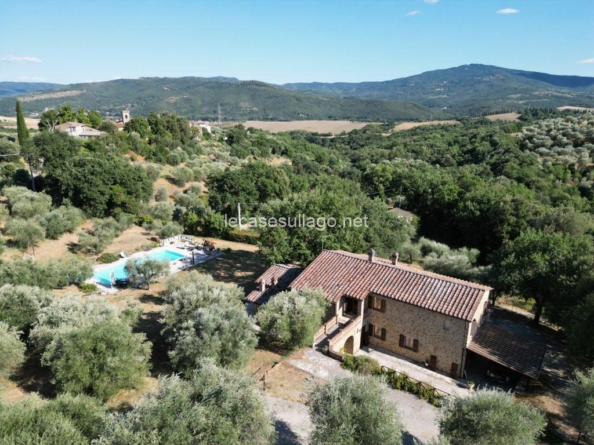

€800.000
Panicale (Missiano / 3 km from the borgo), Umbria
The real Panicale house on this hunt: exposed stone and brick, 2008 redo still in excellent order, a serious 16×8 salt pool, 2.2 ha and 570 producing olives. Habitable now, not a project.
Agency page today: 800.000€, 316 mq, 3 beds / 4 baths, garden 22,420 mq. English sister page same specs. Energy class 'being defined'. Attico.it mirror updated 7 Aug 2026 at the same price. 100 m easy dirt drive. Not on the Luce board.